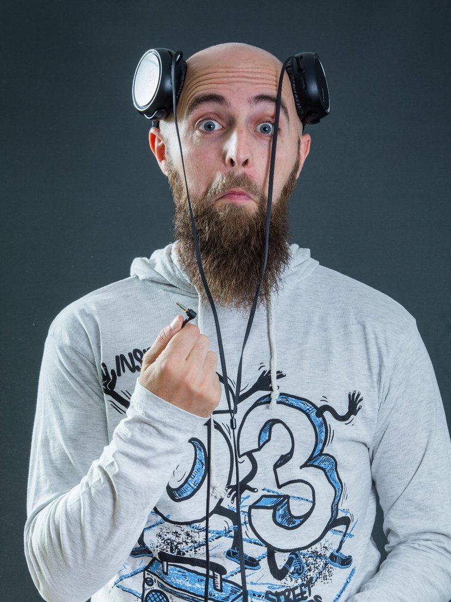

Quiénes somos
Sobre nosotros
ImproXpresión es más que una compañía de teatro de improvisación; es un espacio donde la creatividad, la espontaneidad y la diversión se encuentran para crear momentos inolvidables.
Conoce al equipo

📷 assets/abraham.jpg
Abraham Efegé
Actor de teatro de improvisación valenciano formado en la terreta y en compañías de Madrid.
Ha participado en diferentes shows y formatos de impro para diferentes edades. Presentador y animador de público de espectáculos de todo tipo.
📷 assets/edu.jpg
'">
Actor de teatro de improvisación que ha participado en espectáculos por Madrid, Illescas, Ugena, Añover de Tajo, Pantoja…
También es formador de teatro e impro para grupos de adultos, jóvenes e infantil en Ugena, en la escuela Menudos Artistas.